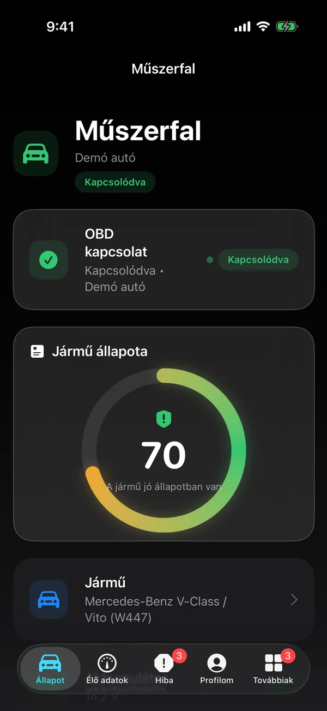
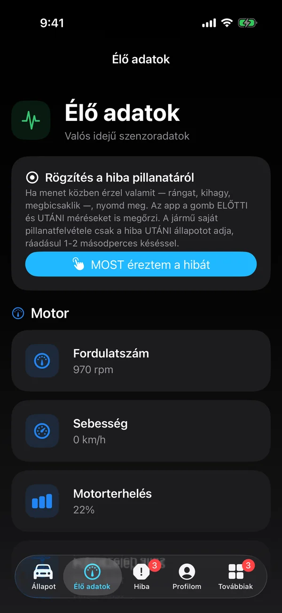
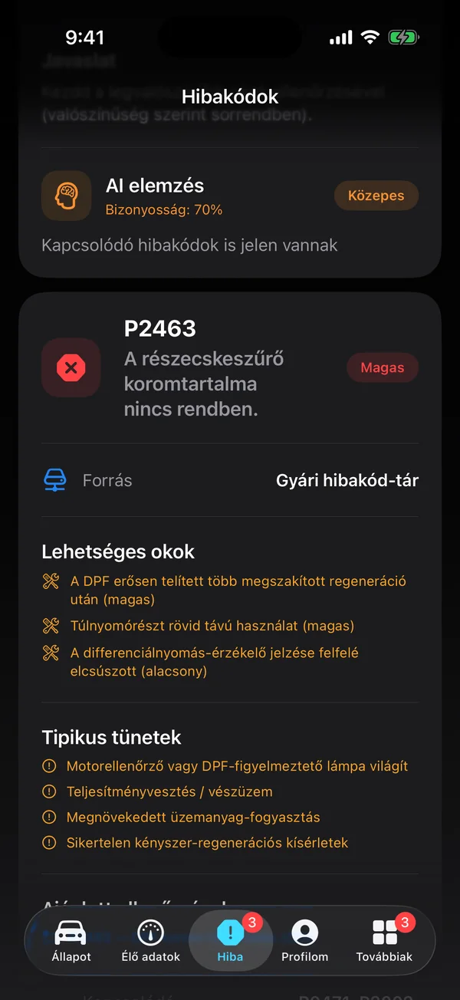
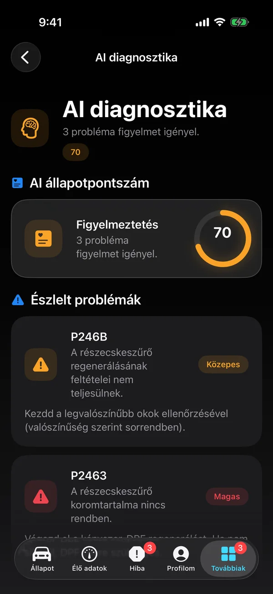
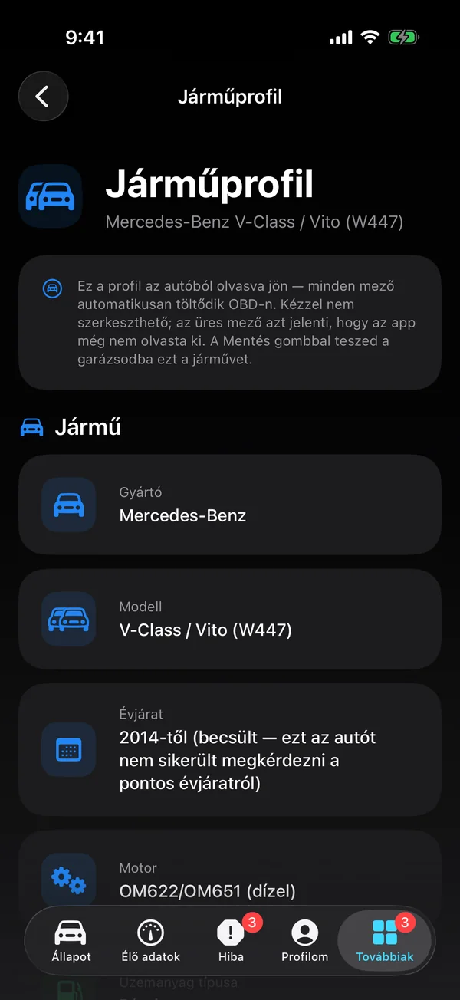
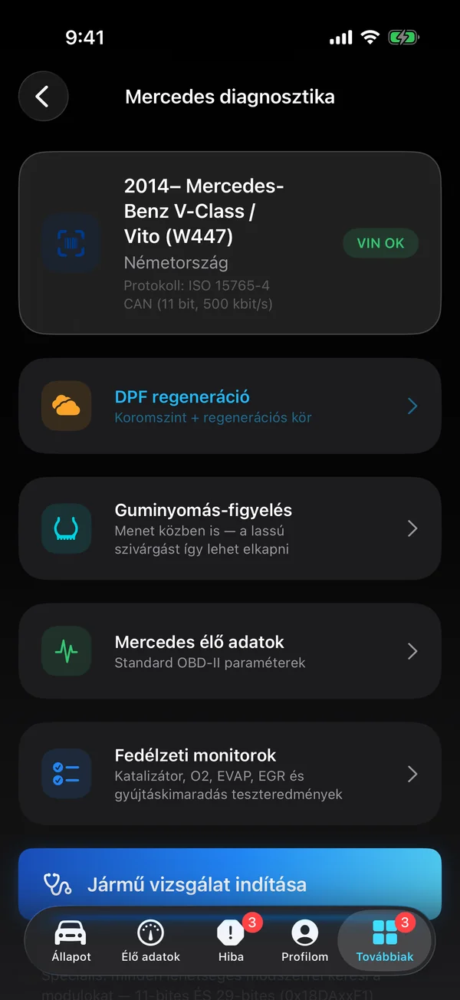

9 500+
hibakód magyarul
Csatlakozz az autódhoz, és láss mindent, amit a szerviz lát — élő adatok, hibakódok érthető magyar magyarázattal, márka-mélydiagnosztika és egy saját AI, ami sosem talál ki veszélyes tanácsot.

Nyolc terület, egyetlen appban — az egyszerű hibakód-olvasástól a gyári mélydiagnosztikáig. Minden adat valós; semmi kitalálva.
A szerviz-szintű alapok — magyarul, érthetően.
Nem csak beolvassa a hibát — elmondja, mit jelent.
A generikus OBD csak a felszín. Mi mélyre megyünk.
Amit vezetés közben érdemes figyelni.
Az akku az EV legdrágább alkatrésze — lásd az állapotát.
Ha magadtól nem oldod meg — egy koppintás a szerelődig.
A műszerfalon is — a telefonhoz hozzá sem kell nyúlnod.
Egy OBD-adapter kell — a többit az app intézi.
Valódi képernyőképek az appból — demó módban, egy Mercedes Vito rögzített adataival. Görgess végig rajtuk.





A legtöbb app kiírja, hogy „P0238", és magadra hagy. Az Őrző egy helyben futó, szabály-alapú szakértői motor: rangsorolja a tüneteket, megmondja mi sürgős és mi várhat, és — a legfontosabb — emberi hangon szólal meg, még vezetés közben is.
Miért szabály-alapú, és nem chatbot? Mert egy autónál a hibás tanács veszélyes. Az Őrző minden javaslata gyári/szakértői adatból jön — sosem hallucinál. Ez nem korlát, hanem a lényeg.
„A hűtővíz hőmérséklete magas. Javaslom, állj meg, amíg lehűl a motor."
„A katalizátor hatásfoka csökkent. Érdemes megnézetni a szervizben."
„Az akkumulátor feszültsége alacsonyabb a szokásosnál. Érdemes hamarosan ellenőrizni."
Magyar nyelvű, természetes hang — offline, per-lekérdezés költség nélkül.
Élő demó — a fejegységen pontosan így fut
Élesíted a kijelzőn, megállsz, padlógáz. Élő sebességműszer, stopper és G-erő fut a fejegységen, a részidők menet közben villannak be — új egyéni csúcsnál trófea-értesítés jár. A telefonhoz hozzá sem kell nyúlnod.
SoC, SoH, cellafeszültségek egyenként, hőmérsékletek, pillanatnyi áram. Használt EV-t vennél? Tíz perc alatt kiderül, mennyit ér valójában az akkumulátor — az autó legdrágább alkatrésze.
Márkánként külön modul: gyári hibakód-adatbázisok, modul-szkennelés (ABS, légzsák, váltó, komfort), márka-specifikus élő adatok és vezetett hibakeresés — magyarul, angolul és németül. A BMW-khez gyári DoIP/ENET Wi-Fi is.
Az Őrző megmondja, mi a baj és mennyire sürgős. Ha szakemberre van szükség, egy koppintással eljutsz a szerelődig — az appon belül, valós telefonszám nélkül.
Hibát detektál, felméri a súlyosságot, és felajánlja: foglaljunk időpontot?
Keresel egy szervizt, vagy a szerelőd behív a saját ügyfélkörébe.
Az app elküldi a foglalást a hibakódokkal együtt — a Hiba fülről egy koppintással.
Ő megerősíti vagy áthelyezi az időpontot, te pedig push-értesítést kapsz.
Szerelő vagy? A Pro szinttel saját szervizként jelensz meg, kezeled az ügyfélköröd, és jóváhagyod a foglalásokat — a mély márkadiagnosztika mellett.
Az OBD-adapter a „kábel" az autó és a telefon között. iPhone-hoz Bluetooth LE (vagy Wi-Fi) adapter kell — a klasszikus Bluetooth-adaptereket az iOS nem támogatja; Androidon azok is mennek.
STN-chipes Bluetooth LE adapter. A leggyorsabb és legmegbízhatóbb — a régebbi K-vonalas autókhoz és a márka-mélyszkenneléshez is. Ezen fejlesztjük az appot.
Ugyanaz az STN-firmware család, univerzális mindenevő: iOS, Android és Windows. Kezeli a Ford MS-CAN és a GM SW-CAN gyári hálózatokat is — mély diagnosztika minden autóhoz.
Kedvező árú, jó minőségű BLE adapterek (sok STN-alapú). Megbízhatóan viszik az élő adatot, a hibakódokat és a márkafunkciók nagy részét.
Valódi v1.5-ös chipes Bluetooth LE ELM327 (pl. Veepeak, Viecar, Panlong). Szabvány OBD-II élő adat, hibakód-olvasás és -törlés, generikus diagnosztika.
ELM327-kompatibilis Wi-Fi adapter (35000-es port). Ugyanaz a szabvány funkciókör, vezeték nélkül a telefon Wi-Fi-jén keresztül.
Az újabb BMW-khez gyári DoIP/ENET Wi-Fi interfész: VIN, élő adat, hibakód olvasás és törlés az ISO 13400 protokollon.
Tipp: az olcsó ELM327-klónok minősége erősen ingadozik. A valódi STN-chipes adapter (OBDLink / vLinker) a legbiztosabb — egyszer veszed meg, minden autódhoz jó.
Freemiumtól a szerelői Pro-ig. Az alap-diagnosztika és a guminyomás (ahol az autó adja) mindenkinek ingyenes; a fizetős szintek a tudást mélyítik.
VIP: a belső tesztelők és a hűséges bétázók admin által kapják a teljes Pro-hozzáférést — ingyen. · Egy jobb OBD-műszer 150–400 ezer Ft; az AutoGuardian Alap egy hónapja két kávé ára.
A nyílt béta alatt minden funkció teljesen ingyenes — korlátozás nélkül. Az éles indulás után egy freemium szint marad ingyenes (csatlakozás, műszerfal, hibakód-olvasás, guminyomás ahol az autó adja), a mélyebb funkciók pedig előfizetéssel érhetők el: Alap 1 990 Ft/hó, Plusz 4 490 Ft/hó, Pro (szerelői) 49 990 Ft/hó.
Igen, egy OBD-adapter — ez a „kábel" az autó és a telefon között. iPhone-hoz Bluetooth LE (vagy Wi-Fi) adapter kell; a klasszikus Bluetooth-adaptereket az iOS nem támogatja (Androidon azok is mennek). Az ajánlott OBDLink CX a legmegbízhatóbb, de a jó minőségű vLinker és valódi v1.5-ös ELM327 BLE adapterek is működnek. A teljes listát fentebb, az Adapterek szekcióban látod.
Minden 2001 utáni benzines és 2004 utáni dízel autó kötelezően támogatja az OBD-II-t — ezekkel megy az élő adat és a hibakód-olvasás. A 16 márkamodul ennél sokkal mélyebbre lát. Az app automatikusan felismeri az autót a VIN-ből, és a hozzá tartozó modult kínálja fel.
Igen — a szabványos Mode 04 paranccsal, ugyanazzal, amit a szervizműszerek használnak. Törlés előtt az app megerősítést kér, és figyelmeztet, ha a hiba valószínűleg visszatér, mert az oka nem szűnt meg. (A törlés az Alap szinttől érhető el.)
Minden elemzés a telefonodon fut — a hibakódok értelmezése, az élő adatok figyelése és az AI-összegzés is. A felhőbe csak az autó azonosítói (alvázszám, márka, modell, évjárat, motor, km-óra) és a legutóbbi hibalista kerülnek, egy automatikusan létrehozott, név és e-mail nélküli fiókhoz — hogy a garázsod egy másik telefonon is meglegyen, és hogy a szerviz, akinél foglalsz, lássa a hibákat. Szerelő csak akkor látja az autódat, ha te kapcsolódsz hozzá vagy foglalsz nála. Nem adjuk el senkinek, nincs reklám és nincs követés. Regisztrálni nem kell; Apple- vagy Google-fiókkal belépni csak akkor érdemes, ha több telefonon használod. Részletek: Adatkezelési tájékoztató.
Ha a hibát nem magad javítod, az appon belül kereshetsz szerelőt, vagy a szerelőd behívhat az ügyfélkörébe, és időpontot foglalhatsz nála — telefonszám nélkül, az appon belül. A szerelő jóváhagyja az időpontot, te értesítést kapsz. Ez már az Alap szinttől jár.
Mert egy autónál a hibás tanács veszélyes. Az Őrző szabály-alapú szakértői motor: minden javaslata gyári/szakértői adatból származik, sosem hallucinál. Ez nem gyengeség, hanem pont az eladható érték — megbízhatsz benne.
| Platform | iPhone (iOS 17+) · Apple CarPlay · Android (Android Auto) — béta |
| Adapter | OBDLink CX / MX+ (ajánlott, STN) · Vgate vLinker · valódi ELM327 v1.5 Bluetooth LE · Wi-Fi ELM327 · BMW ENET/DoIP |
| Protokollok | CAN (11/29 bit, 250/500 kbit) · ISO 9141-2 · KWP2000 (K-vonal, fast-init) · DoIP / ENET (BMW) · UDS |
| Hibakód-tár | 9 533 generikus kód valódi magyar címmel, leírással, okokkal — offline |
| Márkamodulok | 16 márka: gyári kódtárak, modul-szkennelés, márka-élőadatok, vezetett hibakeresés 3 nyelven |
| EV-támogatás | SoC · SoH · cellafeszültségek · akkuhő · áram (Renault Zoe, Hyundai/Kia, Maxus) |
| Mérés | Guminyomás élő figyelés (6 márka) · dragméter (GPS+IMU) · DPF-státusz + regeneráció |
| Nyelvek | Magyar · angol · német |
| Ár | Freemium · Alap 1 990 · Plusz 4 490 · Pro 49 990 Ft/hó — a béta alatt minden ingyen |
| Adatkezelés | Minden elemzés a telefonon fut — a felhőbe csak az autó azonosítói és a hibalista kerülnek, név és e-mail nélkül |
A teljes tudással: mind a 16 márkamodul, vezetett hibakeresés három nyelven, EV-akku elemzés és DPF-asszisztens. Csatlakozz, és próbáld ki elsőként.
A béta most ingyenes. Koppints a gombra, telepítsd az appot, és egy perc múlva már az autódat olvasod. Hétről hétre új márkatudással fejlődik.